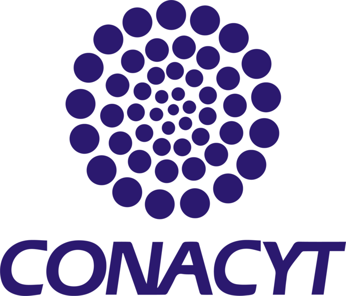

<mat-toolbar>

    <!--LOGO TECNM-->
    

    <!--LOGO ITZ-->
    

    <!--GENERAL-->
    <button mat-button [matMenuTriggerFor]="general">
        <span class="material-icons align-middle ">
            history_edu
          </span>
        General

    </button>
    <mat-menu #general="matMenu">

        <button mat-menu-item routerLink="general-perfiles">
            <span class="material-icons align-middle ">
                perm_identity
            </span>
            Perfiles
            
        </button>

        <button mat-menu-item routerLink="general-objetivos-metas">
            <span class="material-icons align-middle ">
                fact_check
              </span>
              Objetivos y metas
        </button>

        <button mat-menu-item routerLink="general-planes-estudio">
            <span class="material-icons align-middle  ">
                book
            </span>
            Planes de estudio
        </button>

        <button mat-menu-item routerLink="lgac">
            <span class="material-icons align-middle  ">
                file_present
            </span>
           LGAC
        </button>

        <button mat-menu-item routerLink="seleccion-aspirantes">
            <span class="material-icons align-middle ">
                offline_pin
            </span>
           Selección de aspirantes
        </button>

        <button mat-menu-item routerLink="caracteristicas-tesis">
            <span class="material-icons align-middle ">
                import_contacts
            </span>
           Características tésis 
        </button>

    </mat-menu>


    <!--PROCESOS ADMINISTRATIVOS-->
    <button mat-button [matMenuTriggerFor]="procesosAdministrativos">
        <span class="material-icons align-middle  ">
            integration_instructions
        </span>
        Procesos administratvios
    </button>
    <mat-menu #procesosAdministrativos="matMenu">

        <button mat-menu-item routerLink="procesos-administrativos-requisitos-ingreso">
            <span class="material-icons align-middle ">
                arrow_forward
            </span>
                Requisitos de ingreso
        </button>

        <button mat-menu-item routerLink="procesos-administrativos-requisitos-permanencia">
            <span class="material-icons  align-middle">
                last_page
            </span>
                Requisitos de permanencia
        </button>

        <button mat-menu-item routerLink="procesos-administrativos-requisitos-egreso">
            <span class="material-icons  align-middle">
                west
            </span>
            Requisitos de egreso
        </button>

        <button mat-menu-item routerLink="procesos-administrativos-becas">
            <span class="material-icons  align-middle">
                topic
            </span>
            Becas
        </button>

        <button mat-menu-item routerLink="procesos-administrativos-descargas">
            <span class="material-icons align-middle ">
                arrow_circle_down
            </span>
            Descargas
        </button>


    </mat-menu>


    <!--NUCELO ACADEMICO-->
    <button mat-button routerLink="nucleo-academico">
        <span class="material-icons align-middle ">
            school
        </span>
        Núcleo académico
    </button>

    <!--ALUMNOS-->
    <button mat-button routerLink="estudiantes">
        <span class="material-icons align-middle ">
            people_outline
        </span>
        Estudiantes
    </button>

    <!--VINCULACIÓN-->
    <button mat-button routerLink="vinculacion">
        <span class="material-icons align-middle ">
            public
        </span>
        Vinculación
    </button>

    <!--NORMAS Y ESTATUTOS-->
    <button mat-button routerLink="normas-estatutos">
        <span class="material-icons align-middle ">
            article
        </span>
        Normas y estatutos
    </button>

    <!--CONTACTO-->
    <button mat-button routerLink="contacto">
        <span class="material-icons align-middle ">
            connect_without_contact
        </span>
          Contacto
    </button>

    <!--CONTACTO-->
    <button mat-button routerLink="login">
            <span class="material-icons align-middle ">
                login
            </span>
             Login
    </button>

    <!--LOGO TECNM-->
    

    <!--LOGO ITZ-->
    

</mat-toolbar>

<router-outlet></router-outlet>